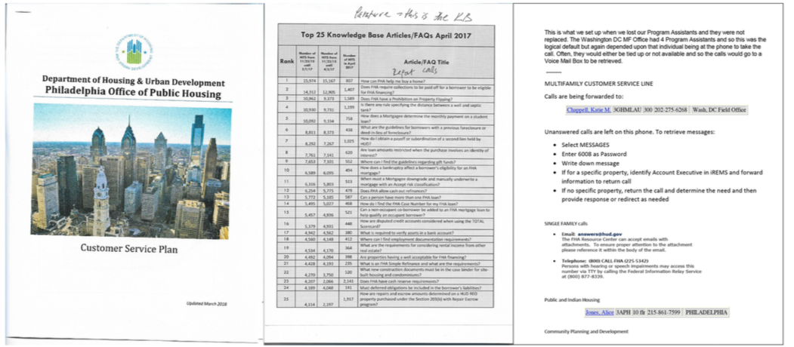
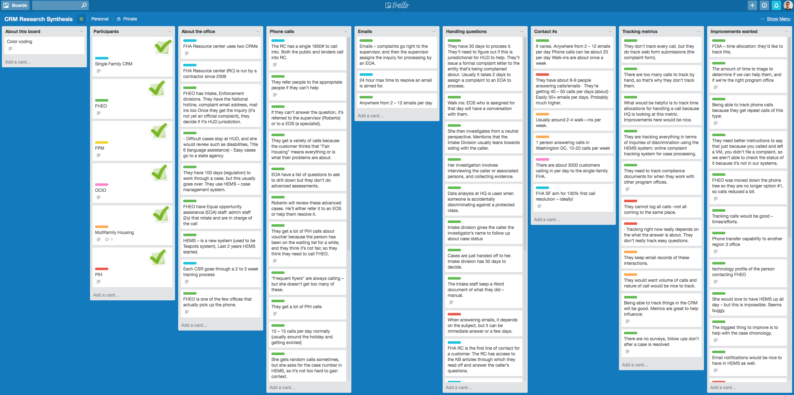

Improving customer service with a CRM
Project goal
Enable front line customer service and senior leadership to have a unified view of citizen demographics, questions, complaints, and resolutions agency-wide.
Project outcome
This project is still ongoing; however, there is now a holistic view of current customer service and how the CRM can fit into ways of working.
My Process
Discovery
Stakeholders
The first part of the process of exploring the needs, goals, and limitations was to talk with the stakeholders of this project. Over several weeks, I talked with several people involved in the CRM project, where several important points came out:
- There are many toll-free numbers that should be consolidated into a single contact point for citizens.
- They wanted to focus on customer experience but there wasn’t a solid strategy yet in place.
- The CRM should support all levels of technical ability with reduced resources.
- The current way of tracking customers varies across mediums and office locations.
- A CSR’s knowledge of how to help a citizen or where to transfer them is based on tacit knowledge and experience with less emphasis on protocols and procedures.
My colleague and I discussed these findings and determined that there was a clear need to further investigate these points. We created a CRM field research plan where we would visit our local offices and conduct contextual interviews with future users of the CRM - both as a frontline staff member or program director.
Contextual research in the field
The next step was to visit my local HUD field office to gain a better perspective of current customer service process and how a CRM would need to fit into their ways of working while also considering staff ability and resources.
Over a month, I talked with 14 people of varying levels of seniority across 6 program areas. Part of my research gave me a first hand look of what we heard from stakeholders: tracking customer questions widely varies and sometimes just existed on paper.

Synthesis
With a lot of data collected after interviewing staff, I started to sort through the data to make sense of it. Instead of using Excel, or sticky notes, I choose Trello as a ‘digital sticky note’ tool to sort through insights and to help identify opportunities. I chose to do it this way to make it immediately shareable with whomever wanted to view it.

A few of salient quotes from participants:
Customers can be emotional because it’s an emergency, eviction, being harassed, or HUD and section 8 ‘that gets confused a lot’.
How are we supposed to handle calls with limited staff time?
Inquiries and complaints are confusing for the person and they reflect the structure of HUD’s internal mode of working and not how the person sees it.
Reporting out
The next step taken was to compare insights and opportunities I identified with those of my colleague in order for us to give our the stakeholders an accurate, holistic view of current customer service processes as well as ideas on how to make the CRM rollout a success.
Collectively, we identified 4 top takeaways to consider for this project:
- Customer need to be confident that their issue has been heard and know their issue will be resolved
- Customers need quick and clear information about what HUD can do for them and who to turn to if HUD can’t help
- HUD staff need to know who is responsible for answering a call and who is best suited to answer a specific concern
- HUD employees think a CRM will positively impact their customer service but have questions about duplicative work and increased time spent tracking.
Research findings report not included in this case study.
Journey mapping exploration
We also identified 4 opportunities where customer services process could be improved. These opportunities were sketched out in a future-state customer journey map by my colleague. I then used that artifact as a talking point to test our ideas with staff in my local office.
I met with a staff member whose office would eventually start using the CRM to record citizen interactions and questions.
Walking through the journey map yielded great insight into the possible impact of the opportunities we suggested. Based on the office’s current ways of working, the proposed customer journey still needed refinement.
This discussion resulted in me restructuring the journey to take on a service blueprint view. I did this because I discovered that there are several moving parts on HUD’s side that need to work together in order to delivery great customer service using the CRM. This is visualized in the below image.

Next steps
This project is not yet finished and won’t be for a while. My suggested next steps will be is to actually sit down with CSR and watch them perform their working using the CRM system to understand how the CRM itself may be need to be changed as well as determining which metrics make sense to collect.
Copyright © 2017 Mark Bubel